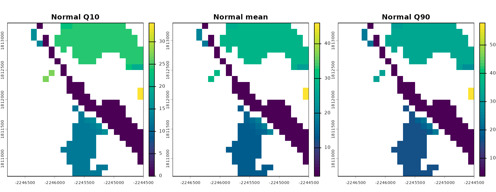
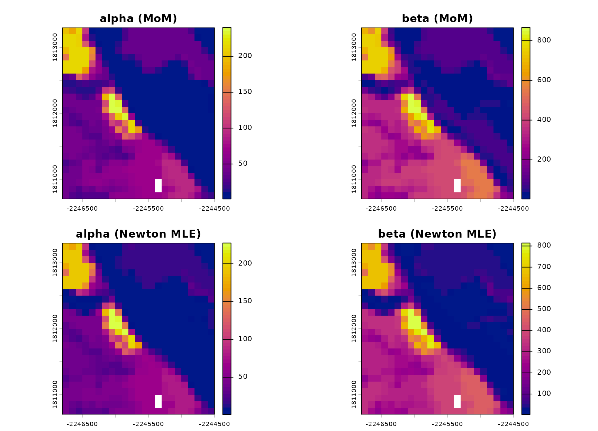
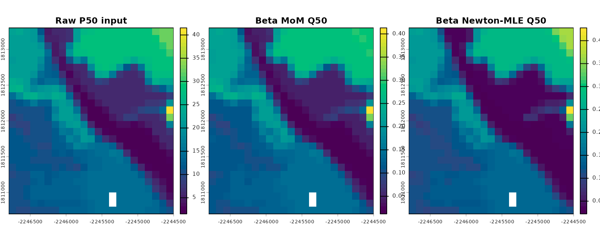
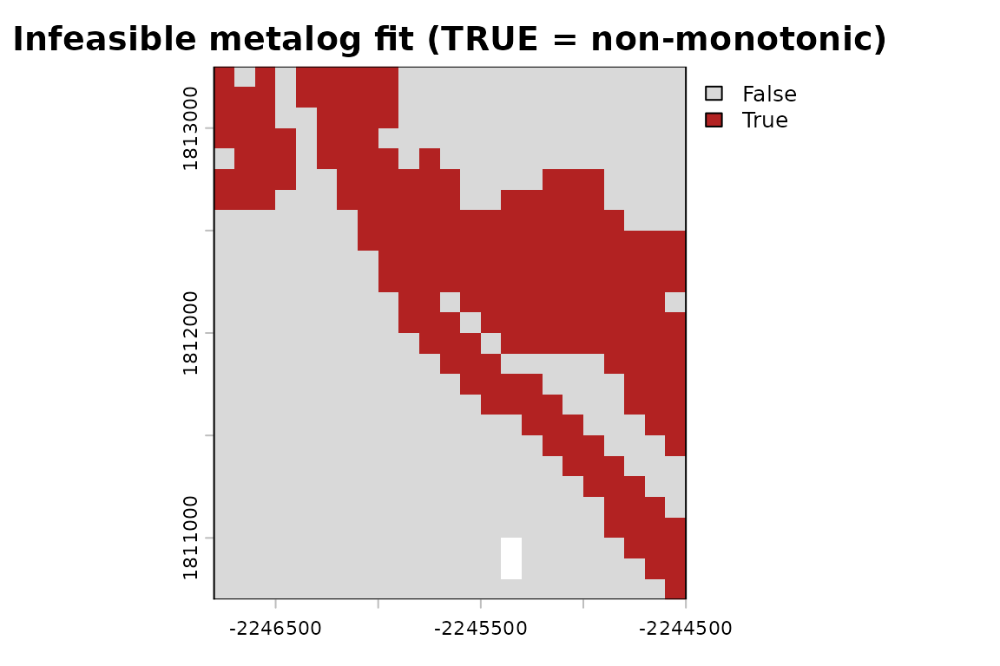
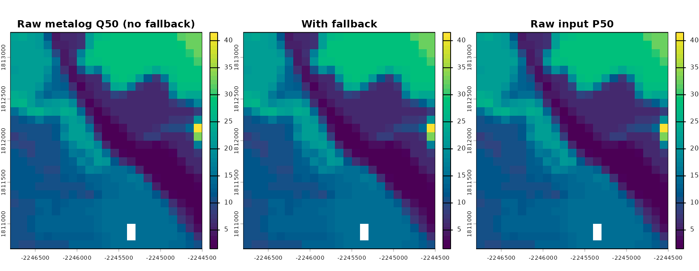
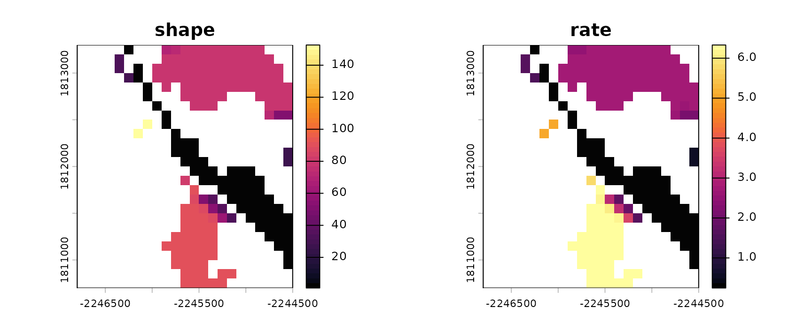
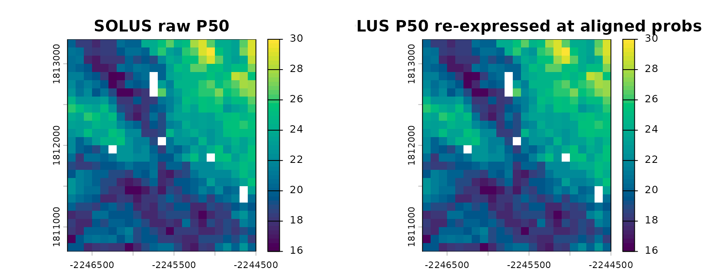
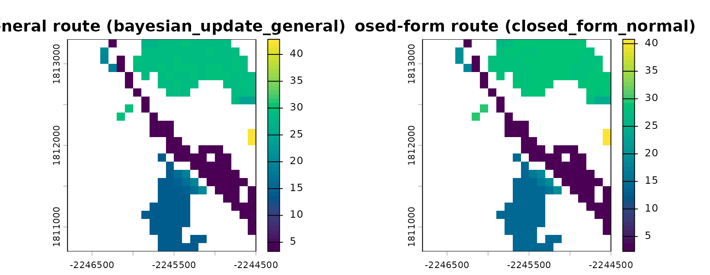
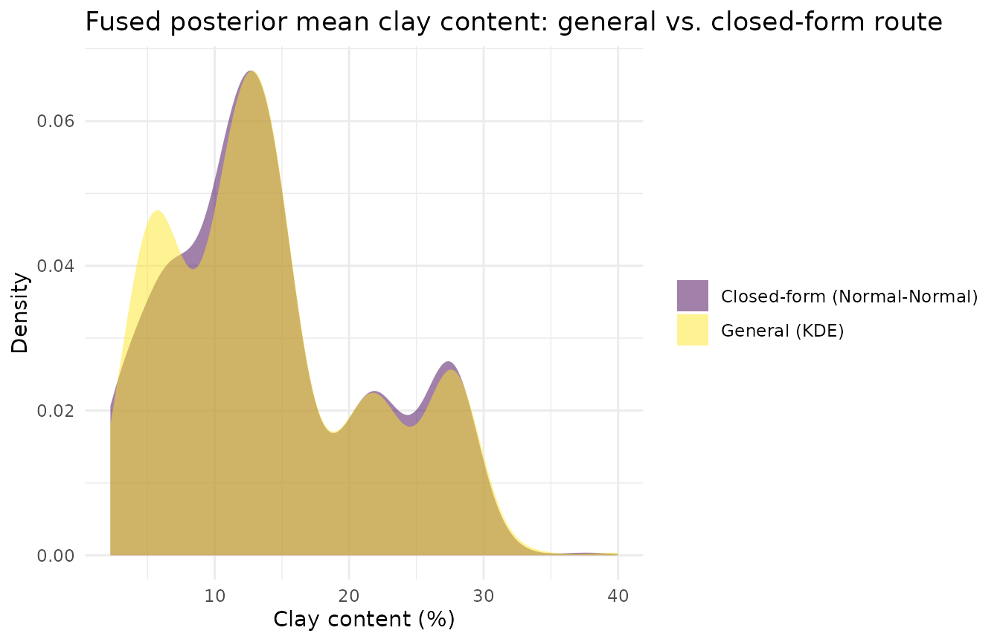

Raster-Native Fitting & Fusion Internals
Source:vignettes/raster-native-fitting-fusion.Rmd
raster-native-fitting-fusion.RmdOverview
raster-fusion-ssurgo-solus.Rmd shows the
pipeline view of soilSIM’s multi-source raster fusion: call
run_stage1_fusion()/run_stage1_fusion_group()
and get back a fused posterior. This vignette opens the hood.
run_stage1_fusion() is a thin fetch-and-cache wrapper
around a handful of small, composable, raster-native building blocks -
distribution fitting functions
(R/distribution-fitting-raster.R), a fusion core
(R/raster-fusion.R), and a disk cache
(R/raster-cache.R) - each of which does exactly one thing
to a terra::SpatRaster (or list of them) and can be called
directly. Understanding these individually is what makes the pipeline’s
behavior (which route it took, why a family was resolved a certain way,
why two sources’ percentiles had to be realigned before fusing) legible
rather than a black box. See
soilSIM/docs/09_multi_source_raster_fusion_pipeline.md for
the full function-level reference this vignette is built from.
Reusing real data instead of fetching
Fetching SSURGO/SOLUS100 live requires network access and takes
minutes; this vignette reuses the same cached Salinas Valley
clay-content fusion result raster-fusion-ssurgo-solus.Rmd
uses, so every function below runs on real percentile rasters rather
than synthetic ones. The real (network) calls that originally produced
this cached object are shown for reference only and not evaluated
here:
# Reference only - not run in this vignette.
salinas_wkt <- "POLYGON((-121.66 36.60, -121.64 36.60, -121.64 36.62, -121.66 36.62, -121.66 36.60))"
aoi <- terra::project(terra::vect(salinas_wkt, crs = "epsg:4326"), "epsg:5070")
property_config <- list(id = "clay", solus_variable = "claytotal", dist = "normal")
fusion_clay <- run_stage1_fusion(aoi, property_config, top_depth = 0, bottom_depth = 5)
fusion_clay <- unwrap_nested_rasters(
readRDS(system.file("extdata", "fusion_clay_salinas.rds", package = "soilSIM"))
)
# The two inputs every function below operates on: named lists of percentile-value
# SpatRasters, one list per source, plus the probabilities each percentile represents.
prior_values <- fusion_clay$prior$values # SSURGO, already resampled onto the SOLUS grid
prior_probs <- fusion_clay$prior$probs
lik_values <- fusion_clay$likelihood$values # SOLUS100
lik_probs <- fusion_clay$likelihood$probs
names(prior_values); prior_probs
#> [1] "P05" "P25" "P50" "P75" "P95"
#> [1] 0.05 0.25 0.50 0.75 0.95
names(lik_values); lik_probs
#> [1] "P025" "P50" "P975"
#> [1] 0.025 0.500 0.975
bounds <- c(0, 100) # clay content is a percentageThis is the “common currency” every function in this vignette speaks:
a named list of single-layer percentile-value rasters
(e.g. P05, P25, P50, …) plus a
numeric vector of the probabilities they represent, all
sharing one grid. Everything downstream - fitting, quantile evaluation,
fusion, caching - operates on this shape (or a pair of them, prior and
likelihood).
1. Fitting a Normal distribution
fit_normal_raster() is the simplest fit in the file:
closed-form, exact, and just three raster arithmetic operations. It
takes a low/median/high percentile-value raster triplet and the
probabilities the low/high rasters represent, and returns
mu (the median raster, used directly as the mean) and
sigma (back-solved from the tail spacing):
fit_n <- fit_normal_raster(
p_lo_r = prior_values$P25, p50_r = prior_values$P50, p_hi_r = prior_values$P75,
p_lo = 0.25, p_hi = 0.75
)
fit_n$mu
#> class : SpatRaster
#> size : 26, 23, 1 (nrow, ncol, nlyr)
#> resolution : 100, 100 (x, y)
#> extent : -2246800, -2244500, 1810700, 1813300 (xmin, xmax, ymin, ymax)
#> coord. ref. : NAD83 / Conus Albers (EPSG:5070)
#> source(s) : memory
#> varname : claytotal_0_cm_l
#> name : P50
#> min value : 1.291976
#> max value : 27.771105sigma is
(p_hi_r - p_lo_r) / (qnorm(p_hi) - qnorm(p_lo)) - the raw
value spread between the two tail percentiles, divided by how many
standard-normal units apart those two probabilities are. This is a
single elementwise expression, so its cost doesn’t depend on how many
cells the raster has. quantile_normal_raster() then
evaluates the fitted distribution at any target probability
q via mu + sigma * qnorm(q):
q10 <- quantile_normal_raster(fit_n, 0.1)
q90 <- quantile_normal_raster(fit_n, 0.9)
normal_stack <- c(q10, fit_n$mu, q90)
names(normal_stack) <- c("Q10", "mu (=P50)", "Q90")
terra::plot(normal_stack, main = c("Normal Q10", "Normal mean", "Normal Q90"),
col = grDevices::hcl.colors(50, "viridis"), nc = 3)
2. Fitting a Beta distribution: method-of-moments vs. Newton-Raphson MLE
Clay content is bounded on [0, 100], which the Normal
fit above ignores (its Q10/Q90 rasters can dip below 0 in low-clay
cells). A Beta fit respects those bounds. soilSIM ships two Beta
fitters:
-
fit_beta_mom_raster(mean_r, var_r)- closed-form method-of-moments, APPROXIMATE, and used only to seed the Newton-Raphson solver below (not intended as a standalone fit). It takes a rescaled-to-[0,1]mean/variance pair directly, not raw percentile rasters. -
fit_beta_mle_newton_raster(value_rasters, bounds, n_iter = 15, eps = 1e-6)- a vectorized Newton-Raphson MLE solver that exploits the Beta log-likelihood’s closed-form score/Hessian (indigamma()/trigamma(), both vectorized base-R functions) to update every cell’s(alpha, beta)simultaneously per iteration,n_itertimes. It takes the raw percentile-value rasters and the physicalboundsdirectly, and internally seeds itself fromfit_beta_mom_raster().
# Method-of-moments needs mean/var already rescaled to [0,1]; reuse the Normal fit above as a
# cheap mean/variance proxy, rescaled by `bounds`.
mean_r <- fit_n$mu / bounds[2]
var_r <- (fit_n$sigma / bounds[2])^2
fit_beta_mom <- fit_beta_mom_raster(mean_r, var_r)
# The Newton-Raphson MLE fit takes the raw percentile rasters and bounds directly - it does its
# own internal method-of-moments seeding.
fit_beta_mle <- fit_beta_mle_newton_raster(prior_values, bounds)
beta_params <- c(fit_beta_mom$alpha, fit_beta_mom$beta, fit_beta_mle$alpha, fit_beta_mle$beta)
names(beta_params) <- c("alpha (MoM)", "beta (MoM)", "alpha (Newton MLE)", "beta (Newton MLE)")
terra::plot(beta_params, col = grDevices::hcl.colors(50, "plasma"), nc = 2)
The two fits’ shape-parameter rasters differ cell-by-cell (MoM only
matches the first two moments; Newton MLE fits all of the percentiles
supplied to it), but both feed the same quantile function shape -
quantile_beta_mom_raster(fit, q) /
quantile_beta_mle_newton_raster(fit, q), each implemented
via terra::lapp() calling stats::qbeta() per
cell, since qbeta() has no raster-native vectorized form of
its own:
q_mom <- quantile_beta_mom_raster(fit_beta_mom, 0.5)
q_mle <- quantile_beta_mle_newton_raster(fit_beta_mle, 0.5)
median_compare <- c(prior_values$P50, q_mom, q_mle)
names(median_compare) <- c("Raw P50 input", "Beta MoM Q50", "Beta Newton-MLE Q50")
terra::plot(median_compare, col = grDevices::hcl.colors(50, "viridis"), nc = 3)
The Newton-MLE fit’s own Q50 tracks the raw input P50 raster much
more closely than the MoM fit’s does, since MLE was fit against all five
of prior_values’ percentiles rather than just a
mean/variance proxy derived from two of them.
3. Fitting a metalog distribution, and its feasibility fallback
The metalog family can match an arbitrary number of percentiles
exactly via a linear solve rather than an optimization -
fit_metalog_linear_raster(value_rasters, probs, bounds, boundedness)
requires the number of interior percentiles (excluding
p = 0/p = 1, where the metalog’s logit
transform is undefined) to equal the number of metalog terms, making the
fit exactly determined.
Symmetric percentile sets are a real, sharp edge here: fitting all
five of prior_values’s percentiles
(0.05/0.25/0.5/0.75/0.95 - symmetric about the median)
makes the underlying basis matrix numerically singular, since two of its
basis columns become linearly dependent for a symmetric probability
grid. An asymmetric 4-term subset avoids it:
ml_probs <- c(0.05, 0.25, 0.5, 0.75)
ml_values <- prior_values[c("P05", "P25", "P50", "P75")]
fit_ml <- fit_metalog_linear_raster(ml_values, ml_probs, bounds, boundedness = "b")
length(fit_ml$a) # one coefficient raster per term
#> [1] 4
fit_ml$term
#> [1] 4Not every fitted metalog is a valid one - a metalog quantile
function must be monotonically increasing (equivalent to non-negative
density everywhere), and the exact linear solve above gives no such
guarantee. check_metalog_feasibility_raster() probes the
fit at a grid of probabilities and flags cells where consecutive probes
decrease:
infeasible <- check_metalog_feasibility_raster(fit_ml, bounds, boundedness = "b")
n_infeasible <- sum(terra::values(infeasible), na.rm = TRUE)
n_total <- terra::ncell(infeasible)
cat(sprintf("%d / %d cells (%.0f%%) have an infeasible metalog fit\n",
n_infeasible, n_total, 100 * n_infeasible / n_total))
#> 150 / 598 cells (25%) have an infeasible metalog fit
terra::plot(infeasible, main = "Infeasible metalog fit (TRUE = non-monotonic)",
col = c("grey85", "firebrick"))
A substantial fraction of cells are infeasible here - not a bug, just
a real consequence of fitting only 4 of the 5 available percentiles to a
family with no correction step of its own.
quantile_metalog_linear_with_fallback() is the function
every real caller should use instead of
quantile_metalog_linear_raster() directly: it evaluates the
raw metalog quantile function, and for whichever cells
check_metalog_feasibility_raster() flagged, blends in
quantile_linear_cdf_raster()’s nonparametric interpolation
(evaluated against the full percentile set, not just the
interior ones used to fit the metalog) instead:
fallback_result <- quantile_metalog_linear_with_fallback(
fit_ml, infeasible, full_value_rasters = prior_values, full_probs = prior_probs,
q = 0.5, bounds = bounds, boundedness = "b"
)
raw_metalog_q50 <- quantile_metalog_linear_raster(fit_ml, 0.5, bounds, boundedness = "b")
blend_stack <- c(raw_metalog_q50, fallback_result$value, prior_values$P50)
names(blend_stack) <- c("Raw metalog Q50 (no fallback)", "With fallback", "Raw input P50")
terra::plot(blend_stack, col = grDevices::hcl.colors(50, "viridis"), nc = 3)
4. Fitting a Gamma distribution
fit_gamma_mom_raster() is a thin raster wrapper: it
computes mean/variance rasters across a list of percentile-value rasters
(the only genuinely raster-specific step, via
Reduce(+, ...)), then delegates to
R/bayesian-updating.R’s existing scalar
moments_to_gamma(), which is pure elementwise arithmetic
and therefore already works unchanged on SpatRaster
inputs:
fit_gamma <- fit_gamma_mom_raster(prior_values)
gamma_stack <- c(fit_gamma$shape, fit_gamma$rate)
names(gamma_stack) <- c("shape", "rate")
terra::plot(gamma_stack, col = grDevices::hcl.colors(50, "inferno"), nc = 2)
5. Aligning mismatched percentile grids:
align_percentile_probs()
SSURGO’s prior percentiles (0.05, 0.25, 0.5, 0.75, 0.95) and
SOLUS100’s likelihood percentiles (0.025, 0.5, 0.975) aren’t the same
probabilities - every fusion route needs both sides to share one
probs vector, so passing them through mismatched would
silently mis-fit whichever side’s percentiles don’t match the assumed
labels.
aligned <- align_percentile_probs(prior_values, prior_probs, lik_values, lik_probs)
aligned$probs
#> [1] 0.05 0.25 0.50 0.75 0.95
names(aligned$prior_value_rasters) # unchanged (SSURGO's probs won - see below)
#> [1] "P05" "P25" "P50" "P75" "P95"
length(aligned$lik_value_rasters) # SOLUS reinterpolated onto aligned$probs - unnamed list
#> [1] 5align_percentile_probs() picks whichever side’s
probabilities span the narrower range as the shared target
(diff(range(prior_probs)) = 0.9 vs.
diff(range(lik_probs)) = 0.95, so the SSURGO side’s
probabilities win here) and reinterpolates the other side onto it via
quantile_linear_cdf_raster() - never the reverse, since
interpolating requires the target probability to fall within the
source’s own range, and the narrower side is always safely
interpolatable from the wider one. The reinterpolated side comes back as
a plain (unnamed) list in aligned$probs’ order, so pick the
layer to compare by matching its position in aligned$probs
rather than by name:
idx50 <- which(aligned$probs == 0.5)
lik_compare <- c(lik_values$P50, aligned$lik_value_rasters[[idx50]])
names(lik_compare) <- c("SOLUS raw P50", "SOLUS P50 re-expressed at aligned probs")
terra::plot(lik_compare, col = grDevices::hcl.colors(50, "viridis"), nc = 2)
Here the shared target happens to already include 0.5 on
both sides, so the P50 layer above is unchanged by
realignment - it’s the tail percentiles
(P05/P95
vs. P025/P975) that actually get
reinterpolated.
6. Family resolution: resolve_property_dist()
When property_config$dist == "auto",
resolve_property_dist() picks a distribution family from
the AOI’s own percentile skew rather than a fixed per-property label -
and never overrides an explicit (non-"auto")
dist. It’s deliberately narrow: it only ever resolves to
"beta" (if bounds is configured),
"normal", or "lognormal" - never
"metalog" or "gamma", since distinguishing
those from a 3-point proxy isn’t considered reliable.
# With bounds configured, "auto" always resolves to "beta" regardless of skew.
resolve_property_dist(list(dist = "auto", bounds = c(0, 100)), prior_values, prior_probs)
#> $dist
#> [1] "beta"
#>
#> $dist_source
#> [1] "auto"
#>
#> $skew_proxy
#> [1] 0.1347358
# Without bounds, it falls back to a skew-proxy test: normal if |skew| is small, lognormal if not.
resolve_property_dist(list(dist = "auto"), prior_values, prior_probs)
#> $dist
#> [1] "normal"
#>
#> $dist_source
#> [1] "auto"
#>
#> $skew_proxy
#> [1] 0.1347358The skew proxy itself is
((high - median) - (median - low)) / (high - low),
aggregated once across the whole AOI (default
stats::median()) rather than per cell - computing it per
cell would create map discontinuities right at the family boundary. An
explicit dist is always honored untouched:
resolve_property_dist(list(dist = "normal"), prior_values, prior_probs)$dist_source
#> [1] "config"7. Adaptive fusion dispatch: fuse_adaptive()
fuse_adaptive() is the size-adaptive engine
fuse_property_adaptive() (and therefore
run_stage1_fusion()) delegates to for
"normal"/"beta"/"gamma" families.
It picks the fusion route from the AOI’s own cell count rather
than requiring the caller to choose: at or below
threshold_cells (default 80,000), it uses a fully general
per-cell KDE route (bayesian_update() on samples drawn from
each side’s percentiles); above it, a much faster closed-form route
built directly on the fitting functions from Sections 1-4 above (e.g.
fit_normal_raster() +
bayes_update_normal_normal() for
family = "normal").
This AOI is small (598 cells), so it naturally takes the general
route. Forcing threshold_cells = 0 shows the alternate
closed-form route on the exact same inputs, with
verbose = TRUE (the pipeline default is quiet - this is a
deliberate log demo):
fused_general <- fuse_adaptive(
aligned$prior_value_rasters, aligned$lik_value_rasters, aligned$probs,
family = "normal", verbose = TRUE
)
#> [fuse_adaptive] AOI: 598 cells (threshold: 80000) -> route: bayesian_update_general
fused_closed_form <- fuse_adaptive(
aligned$prior_value_rasters, aligned$lik_value_rasters, aligned$probs,
family = "normal", threshold_cells = 0, verbose = TRUE
)
#> [fuse_adaptive] AOI: 598 cells (threshold: 0) -> route: closed_form_normal
route_compare <- c(fused_general$posterior$mu, fused_closed_form$posterior$mu)
names(route_compare) <- c(paste0("General route (", fused_general$route, ")"),
paste0("Closed-form route (", fused_closed_form$route, ")"))
terra::plot(route_compare, col = grDevices::hcl.colors(50, "viridis"), nc = 2)
Both routes fuse the same prior/likelihood into a
mu/sigma posterior with the same output
contract, but they reach it differently: the general route makes no
distributional assumption about the fusion step itself (only
about the requested output family), while the closed-form route fits
both sides Normal first (Section 1) and fuses via the closed-form
bayes_update_normal_normal() update - much cheaper per
cell, at the cost of that Normal assumption.
route_df <- data.frame(
value = c(terra::values(fused_general$posterior$mu, na.rm = TRUE),
terra::values(fused_closed_form$posterior$mu, na.rm = TRUE)),
route = rep(c("General (KDE)", "Closed-form (Normal-Normal)"),
c(sum(!is.na(terra::values(fused_general$posterior$mu))),
sum(!is.na(terra::values(fused_closed_form$posterior$mu)))))
)
ggplot(route_df, aes(x = value, fill = route)) +
geom_density(alpha = 0.5, color = NA) +
scale_fill_viridis_d(name = NULL) +
labs(title = "Fused posterior mean clay content: general vs. closed-form route",
x = "Clay content (%)", y = "Density") +
theme_minimal()
8. Caching internals
run_stage1_fusion()/run_stage1_fusion_group()
disk-cache every fetch step under
tools::R_user_dir("soilSIM", "cache"), keyed by AOI +
property/group id + depth window + kind.
build_cache_key() builds a deterministic, filename-safe
key from an AOI’s WKT geometry (hashed via
digest::digest()), a property/group id, a depth window, and
a kind string:
salinas_wkt <- "POLYGON((-121.66 36.60, -121.64 36.60, -121.64 36.62, -121.66 36.62, -121.66 36.60))"
aoi <- terra::project(terra::vect(salinas_wkt, crs = "epsg:4326"), "epsg:5070")
key <- build_cache_key(aoi, id = "clay", top_depth = 0, bottom_depth = 5, kind = "ssurgo")
key
#> [1] "raster_3e9ea7cad8f2_clay_0_5_ssurgo"
CACHE_TTL_SECONDS / 86400 # cache max-age, in days
#> [1] 30cache_get(key, ttl_seconds)/cache_set(key, kind, value)
are the generic get/set pair every fetch step above uses - a miss
(absent, or older than ttl_seconds) returns
NULL rather than erroring:
cache_get(key) # NULL: nothing has been cached under this exact key in this session
#> NULL
cache_set(key, "ssurgo", value = list(hello = "world"))
#> [1] TRUE
cache_get(key)
#> $hello
#> [1] "world"Why SpatRasters need terra::wrap() before
caching
cache_set()’s docs flag a real, sharp limitation: a
terra::SpatRaster holds an external
pointer to in-memory/on-disk GDAL state, not the raster’s
actual values. A plain saveRDS()/readRDS()
round-trip serializes that pointer, which is meaningless in a new R
session - the read-back object looks like a
SpatRaster but errors the moment anything tries to touch
its actual data:
r <- fusion_clay$posterior$mu
naive_file <- tempfile(fileext = ".rds")
saveRDS(r, naive_file) # serializes the pointer, not the raster's values
r_naive <- readRDS(naive_file)
class(r_naive) # still LOOKS like a SpatRaster...
#> [1] "SpatRaster"
#> attr(,"package")
#> [1] "terra"
terra::values(r_naive) # ...but touching it throws
#> lyr.1
#> [1,] NA
#> [2,] NA
#> [3,] NA
#> [4,] NA
#> [5,] NA
#> [6,] NA
#> [7,] 5.617684
#> [8,] NA
#> [9,] NA
#> [10,] NA
#> [11,] NA
#> [12,] NA
#> [13,] NA
#> [14,] NA
#> [15,] NA
#> [16,] NA
#> [17,] NA
#> [18,] NA
#> [19,] NA
#> [20,] NA
#> [21,] NA
#> [22,] NA
#> [23,] NA
#> [24,] NA
#> [25,] NA
#> [26,] NA
#> [27,] NA
#> [28,] NA
#> [29,] NA
#> [30,] 5.702985
#> [31,] 6.338704
#> [32,] 6.716888
#> [33,] 20.168330
#> [34,] 27.702405
#> [35,] NA
#> [36,] NA
#> [37,] NA
#> [38,] NA
#> [39,] NA
#> [40,] NA
#> [41,] NA
#> [42,] NA
#> [43,] NA
#> [44,] NA
#> [45,] NA
#> [46,] NA
#> [47,] NA
#> [48,] NA
#> [49,] NA
#> [50,] NA
#> [51,] NA
#> [52,] NA
#> [53,] 4.176256
#> [54,] 7.046635
#> [55,] 15.987307
#> [56,] 25.949105
#> [57,] 27.156740
#> [58,] 26.814613
#> [59,] 27.525625
#> [60,] 27.621148
#> [61,] 27.401021
#> [62,] NA
#> [63,] NA
#> [64,] NA
#> [65,] NA
#> [66,] NA
#> [67,] NA
#> [68,] NA
#> [69,] NA
#> [70,] NA
#> [71,] NA
#> [72,] NA
#> [73,] NA
#> [74,] NA
#> [75,] 10.694405
#> [76,] 4.511492
#> [77,] 6.298189
#> [78,] 18.944530
#> [79,] 27.238920
#> [80,] 26.786937
#> [81,] 26.916070
#> [82,] 27.174763
#> [83,] 27.185201
#> [84,] 27.356489
#> [85,] 27.425391
#> [86,] 27.500891
#> [87,] 27.823371
#> [88,] NA
#> [89,] NA
#> [90,] NA
#> [91,] NA
#> [92,] NA
#> [93,] NA
#> [94,] NA
#> [95,] NA
#> [96,] NA
#> [97,] NA
#> [98,] 12.133555
#> [99,] 6.826584
#> [100,] 4.679505
#> [101,] 9.864507
#> [102,] 18.881457
#> [103,] NA
#> [104,] 25.159190
#> [105,] 27.828436
#> [106,] 27.769639
#> [107,] 27.660459
#> [108,] 27.723049
#> [109,] 26.295819
#> [110,] 23.918799
#> [111,] 26.264536
#> [112,] 27.712778
#> [113,] 27.483733
#> [114,] 27.461973
#> [115,] NA
#> [116,] NA
#> [117,] NA
#> [118,] NA
#> [119,] NA
#> [120,] NA
#> [121,] 12.931697
#> [122,] 9.895927
#> [123,] 4.633854
#> [124,] 5.075940
#> [125,] 6.752006
#> [126,] NA
#> [127,] 18.025786
#> [128,] 27.405256
#> [129,] 27.458148
#> [130,] 27.431489
#> [131,] 20.730648
#> [132,] 10.910891
#> [133,] 7.702441
#> [134,] 15.348878
#> [135,] 26.559989
#> [136,] 26.997718
#> [137,] 27.480773
#> [138,] 27.720959
#> [139,] NA
#> [140,] NA
#> [141,] NA
#> [142,] NA
#> [143,] 12.952013
#> [144,] 12.854790
#> [145,] 12.092157
#> [146,] 6.591795
#> [147,] 4.095535
#> [148,] 6.028768
#> [149,] NA
#> [150,] 8.729769
#> [151,] 22.668705
#> [152,] 23.691406
#> [153,] 13.578688
#> [154,] 7.076538
#> [155,] 5.763104
#> [156,] 6.192164
#> [157,] 7.666363
#> [158,] 21.648069
#> [159,] 27.513079
#> [160,] 27.647589
#> [161,] 27.387311
#> [162,] NA
#> [163,] NA
#> [164,] NA
#> [165,] NA
#> [166,] 12.726173
#> [167,] 13.846402
#> [168,] 14.409468
#> [169,] 10.239828
#> [170,] 4.704287
#> [171,] 4.316316
#> [172,] 6.323697
#> [173,] 6.434593
#> [174,] 8.658343
#> [175,] 8.805277
#> [176,] 5.897694
#> [177,] 5.743684
#> [178,] 5.854044
#> [179,] 5.848724
#> [180,] 6.243088
#> [181,] 15.715158
#> [182,] 24.417458
#> [183,] 23.792208
#> [184,] 24.238709
#> [185,] NA
#> [186,] NA
#> [187,] NA
#> [188,] NA
#> [189,] 20.229208
#> [190,] 20.900485
#> [191,] 21.078078
#> [192,] 18.251905
#> [193,] 7.099557
#> [194,] 4.299301
#> [195,] 4.869237
#> [196,] 6.038959
#> [197,] 6.301134
#> [198,] 6.377844
#> [199,] 6.184424
#> [200,] 6.095194
#> [201,] 6.118544
#> [202,] 6.650154
#> [203,] 6.713374
#> [204,] 7.144828
#> [205,] 9.139453
#> [206,] 11.903225
#> [207,] NA
#> [208,] NA
#> [209,] NA
#> [210,] NA
#> [211,] NA
#> [212,] 22.010988
#> [213,] 21.358278
#> [214,] 24.971645
#> [215,] 23.887198
#> [216,] 13.119547
#> [217,] 5.340641
#> [218,] 3.160899
#> [219,] 5.121146
#> [220,] 5.454242
#> [221,] 6.008744
#> [222,] 5.974584
#> [223,] 6.009174
#> [224,] 6.597794
#> [225,] 6.158204
#> [226,] 6.388054
#> [227,] 6.325234
#> [228,] 6.053934
#> [229,] 6.591564
#> [230,] NA
#> [231,] NA
#> [232,] NA
#> [233,] NA
#> [234,] NA
#> [235,] 12.909365
#> [236,] 13.179286
#> [237,] 20.019355
#> [238,] 21.488223
#> [239,] 20.022960
#> [240,] 8.490597
#> [241,] 3.971563
#> [242,] 3.638997
#> [243,] 5.022210
#> [244,] 6.301289
#> [245,] 5.959104
#> [246,] 6.284724
#> [247,] 6.271624
#> [248,] 6.349554
#> [249,] 6.433059
#> [250,] 7.317796
#> [251,] 7.286896
#> [252,] 6.693646
#> [253,] NA
#> [254,] NA
#> [255,] NA
#> [256,] NA
#> [257,] 11.448872
#> [258,] 11.380142
#> [259,] 11.535049
#> [260,] 16.861378
#> [261,] 21.476056
#> [262,] 21.392043
#> [263,] 14.707120
#> [264,] 4.639382
#> [265,] 2.989449
#> [266,] 3.194979
#> [267,] 4.767386
#> [268,] 6.324323
#> [269,] 5.722054
#> [270,] 6.361562
#> [271,] 8.252430
#> [272,] 8.905715
#> [273,] 9.941006
#> [274,] 9.491506
#> [275,] 7.863938
#> [276,] NA
#> [277,] NA
#> [278,] NA
#> [279,] NA
#> [280,] 11.357762
#> [281,] 11.415883
#> [282,] 11.643706
#> [283,] 18.487289
#> [284,] 21.509336
#> [285,] 21.507523
#> [286,] 20.019083
#> [287,] 8.653790
#> [288,] NA
#> [289,] 3.913314
#> [290,] 3.318900
#> [291,] 5.588911
#> [292,] 6.342805
#> [293,] 8.556738
#> [294,] 9.118963
#> [295,] 6.597258
#> [296,] 6.010344
#> [297,] 5.673744
#> [298,] NA
#> [299,] NA
#> [300,] NA
#> [301,] NA
#> [302,] NA
#> [303,] 11.452175
#> [304,] 11.304660
#> [305,] NA
#> [306,] 14.154623
#> [307,] 17.910095
#> [308,] 20.556115
#> [309,] 21.369003
#> [310,] 17.519728
#> [311,] 6.360027
#> [312,] 4.103785
#> [313,] 3.040284
#> [314,] 3.835789
#> [315,] 4.684710
#> [316,] 4.504426
#> [317,] 4.219863
#> [318,] 4.848295
#> [319,] 5.556707
#> [320,] 6.074394
#> [321,] NA
#> [322,] NA
#> [323,] NA
#> [324,] NA
#> [325,] 10.597117
#> [326,] 11.036027
#> [327,] 11.474717
#> [328,] 11.635570
#> [329,] 12.336323
#> [330,] 16.633663
#> [331,] 15.637043
#> [332,] 18.540736
#> [333,] 21.053512
#> [334,] 14.022302
#> [335,] 6.105902
#> [336,] 4.269402
#> [337,] 3.561030
#> [338,] 3.039839
#> [339,] 3.144924
#> [340,] NA
#> [341,] 3.671052
#> [342,] 3.901577
#> [343,] 5.913622
#> [344,] NA
#> [345,] NA
#> [346,] NA
#> [347,] NA
#> [348,] 10.998285
#> [349,] 10.950407
#> [350,] 11.212268
#> [351,] 11.418008
#> [352,] 12.163398
#> [353,] 13.770360
#> [354,] 18.204260
#> [355,] 16.576592
#> [356,] 20.711823
#> [357,] 19.908498
#> [358,] 11.591488
#> [359,] 6.825564
#> [360,] 5.386630
#> [361,] 3.783755
#> [362,] 3.485764
#> [363,] 2.923684
#> [364,] 3.299894
#> [365,] 3.689571
#> [366,] NA
#> [367,] NA
#> [368,] NA
#> [369,] NA
#> [370,] NA
#> [371,] 11.005018
#> [372,] 10.812557
#> [373,] 10.835087
#> [374,] 10.977705
#> [375,] 12.119147
#> [376,] 12.316670
#> [377,] 13.663350
#> [378,] 17.782268
#> [379,] 17.162470
#> [380,] 15.576498
#> [381,] 14.396967
#> [382,] 14.471198
#> [383,] 12.639718
#> [384,] 6.617924
#> [385,] 3.836892
#> [386,] 2.946136
#> [387,] 2.893044
#> [388,] 3.500804
#> [389,] NA
#> [390,] NA
#> [391,] NA
#> [392,] NA
#> [393,] 11.063758
#> [394,] 11.091718
#> [395,] 11.126497
#> [396,] 10.995348
#> [397,] 10.747688
#> [398,] 11.544555
#> [399,] 12.141505
#> [400,] 11.731577
#> [401,] 12.977408
#> [402,] 13.129820
#> [403,] 14.005758
#> [404,] 14.464418
#> [405,] 14.773730
#> [406,] 16.545207
#> [407,] 15.495910
#> [408,] 7.214580
#> [409,] 3.802836
#> [410,] 3.444904
#> [411,] 3.286404
#> [412,] NA
#> [413,] NA
#> [414,] NA
#> [415,] NA
#> [416,] 11.100818
#> [417,] 10.965907
#> [418,] 10.932998
#> [419,] 10.907047
#> [420,] 10.679867
#> [421,] 10.682395
#> [422,] 10.744802
#> [423,] 11.017734
#> [424,] 12.269237
#> [425,] 12.703248
#> [426,] 13.818927
#> [427,] 14.499390
#> [428,] 14.302580
#> [429,] 14.593490
#> [430,] 15.420992
#> [431,] 13.496583
#> [432,] 6.291990
#> [433,] 3.611701
#> [434,] 3.286138
#> [435,] NA
#> [436,] NA
#> [437,] NA
#> [438,] NA
#> [439,] 11.131727
#> [440,] 11.017138
#> [441,] 11.188368
#> [442,] 11.804024
#> [443,] 11.553905
#> [444,] 10.922787
#> [445,] 11.616745
#> [446,] 10.833914
#> [447,] 10.657217
#> [448,] 12.071977
#> [449,] 14.342268
#> [450,] 14.382558
#> [451,] 14.546165
#> [452,] 14.496087
#> [453,] 14.357558
#> [454,] 14.137270
#> [455,] 11.527928
#> [456,] 6.448558
#> [457,] NA
#> [458,] NA
#> [459,] NA
#> [460,] NA
#> [461,] NA
#> [462,] 10.902055
#> [463,] 11.282760
#> [464,] 12.542547
#> [465,] 12.720685
#> [466,] 11.745327
#> [467,] 12.150287
#> [468,] 12.832627
#> [469,] 12.600565
#> [470,] 13.035498
#> [471,] 14.193585
#> [472,] 14.388327
#> [473,] 14.546348
#> [474,] 14.558520
#> [475,] 14.510922
#> [476,] 14.399485
#> [477,] 14.335807
#> [478,] 14.350758
#> [479,] 12.139128
#> [480,] NA
#> [481,] NA
#> [482,] NA
#> [483,] NA
#> [484,] NA
#> [485,] 11.369655
#> [486,] 11.625507
#> [487,] 12.477548
#> [488,] 12.386648
#> [489,] 11.672267
#> [490,] 12.894360
#> [491,] 12.919620
#> [492,] 13.005918
#> [493,] 13.762807
#> [494,] 14.364387
#> [495,] 14.584837
#> [496,] 14.605988
#> [497,] 14.575658
#> [498,] 14.584730
#> [499,] 14.453947
#> [500,] 14.536285
#> [501,] 14.389497
#> [502,] 14.436680
#> [503,] NA
#> [504,] NA
#> [505,] NA
#> [506,] NA
#> [507,] NA
#> [508,] NA
#> [509,] NA
#> [510,] 12.663847
#> [511,] 12.854205
#> [512,] 12.642188
#> [513,] 12.926218
#> [514,] 12.857848
#> [515,] 12.852172
#> [516,] 12.887548
#> [517,] 14.015755
#> [518,] 14.518835
#> [519,] 14.512737
#> [520,] 14.706808
#> [521,] 14.563848
#> [522,] 14.499688
#> [523,] 14.407165
#> [524,] 14.467907
#> [525,] 14.370917
#> [526,] NA
#> [527,] NA
#> [528,] NA
#> [529,] NA
#> [530,] NA
#> [531,] NA
#> [532,] NA
#> [533,] NA
#> [534,] NA
#> [535,] NA
#> [536,] NA
#> [537,] 12.940160
#> [538,] 12.776208
#> [539,] 12.702400
#> [540,] 13.746518
#> [541,] 14.474658
#> [542,] 14.381805
#> [543,] 14.558518
#> [544,] NA
#> [545,] 14.478268
#> [546,] 14.381277
#> [547,] 14.398467
#> [548,] NA
#> [549,] NA
#> [550,] NA
#> [551,] NA
#> [552,] NA
#> [553,] NA
#> [554,] NA
#> [555,] NA
#> [556,] NA
#> [557,] NA
#> [558,] NA
#> [559,] NA
#> [560,] NA
#> [561,] NA
#> [562,] NA
#> [563,] 13.149357
#> [564,] 14.269775
#> [565,] 14.452127
#> [566,] 14.528230
#> [567,] NA
#> [568,] 14.608018
#> [569,] 14.502137
#> [570,] 14.293218
#> [571,] NA
#> [572,] NA
#> [573,] NA
#> [574,] NA
#> [575,] NA
#> [576,] NA
#> [577,] NA
#> [578,] NA
#> [579,] NA
#> [580,] NA
#> [581,] NA
#> [582,] NA
#> [583,] NA
#> [584,] NA
#> [585,] NA
#> [586,] NA
#> [587,] NA
#> [588,] NA
#> [589,] NA
#> [590,] 14.641297
#> [591,] 14.644867
#> [592,] 14.583728
#> [593,] 14.481388
#> [594,] NA
#> [595,] NA
#> [596,] NA
#> [597,] NA
#> [598,] NAterra::wrap() converts a SpatRaster into a
PackedSpatRaster - a plain, fully self-contained R object
holding the actual cell values - which does survive
saveRDS()/readRDS();
terra::unwrap() converts it back:
wrap_file <- tempfile(fileext = ".rds")
saveRDS(terra::wrap(r), wrap_file)
r_wrapped_read <- readRDS(wrap_file)
class(r_wrapped_read) # PackedSpatRaster - plain data, not a live pointer
#> [1] "SpatRaster"
#> attr(,"package")
#> [1] "terra"
r_restored <- terra::unwrap(r_wrapped_read)
class(r_restored) # SpatRaster again
#> [1] "SpatRaster"
#> attr(,"package")
#> [1] "terra"
identical(terra::values(r), terra::values(r_restored)) # values round-tripped exactly
#> [1] TRUESince cache_get()/cache_set() themselves
don’t wrap/unwrap automatically (not every cached value is a raster -
e.g. cached SSURGO Monte Carlo draws are a plain data frame), every
caller that caches raster values has to do this manually. Two helpers
cover the two result shapes this pipeline actually caches:
-
wrap_percentile_list()/unwrap_percentile_list()- for the fixedlist(values = <SpatRasters>, probs = )percentile shapefetch_ssurgo_percentiles()/fetch_solus_percentiles()return. -
wrap_nested_rasters()/unwrap_nested_rasters()- a fully generic version for result structures whose shape isn’t that fixed form, e.g.run_stage1_fusion()’s own return value, which nestsSpatRasters atprior$values,likelihood$values, and insideposterior(whose shape varies bydist). It recurses into every list element, replacing eachSpatRasterit finds with its wrapped/unwrapped equivalent and leaving everything else untouched - which is exactly how this vignette’s ownfusion_clayobject was loaded, back in Section “Reusing real data instead of fetching”:
# This is the call this whole vignette started with:
raw <- readRDS(system.file("extdata", "fusion_clay_salinas.rds", package = "soilSIM"))
class(raw$posterior$mu) # still PackedSpatRaster on disk
#> [1] "PackedSpatRaster"
#> attr(,"package")
#> [1] "terra"
fusion_clay_reloaded <- unwrap_nested_rasters(raw)
class(fusion_clay_reloaded$posterior$mu) # SpatRaster after unwrap_nested_rasters()
#> [1] "SpatRaster"
#> attr(,"package")
#> [1] "terra"Where this data came from
The cached data this vignette loads
(inst/extdata/fusion_clay_salinas.rds) is the same object
raster-fusion-ssurgo-solus.Rmd loads, produced once by
data-raw/build_vignette_data.R against live NRCS Soil Data
Access (SSURGO) and soilDB::fetchSOLUS() (SOLUS100) for the
Salinas Valley AOI. See that vignette for the full fetch-through-fuse
pipeline view, and
soilSIM/docs/09_multi_source_raster_fusion_pipeline.md for
the complete function-level reference this vignette exposed piece by
piece.